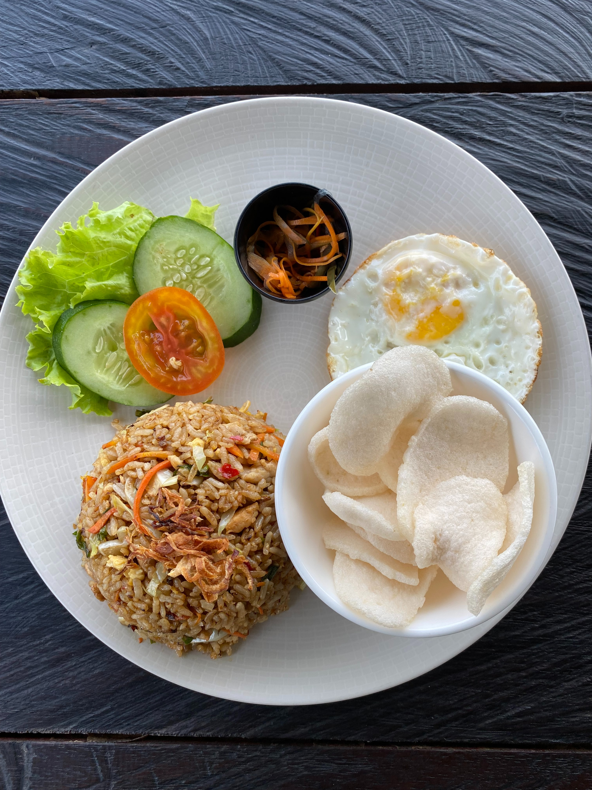

Nasi Goreng

Nasi goreng adalah "Fried Rice" versi Indonesia. Sama dengan Fried Rice pada umumnya, nasi goreng
memiliki cita rasa yang sedikit manis dan pedas. Hal ini karena Nasi Goreng dibuat menggunakan
tambahan kecap manis dan sambal.
- Nasi
- Sambal
- Kecap manis
- Kerupuk
- Ayam (optional)
- Telur
- Siapkan sambal
- Panaskan minyak
- Setelah panas masukan sambal, lalu masukan telur
- Aduk telur agar tidak menyatu, masukan nasi
- Masukan kecap manis dan ayam
- Aduk hingga bumbu merata dengan nasi
- Sajikan dengan kerupuk